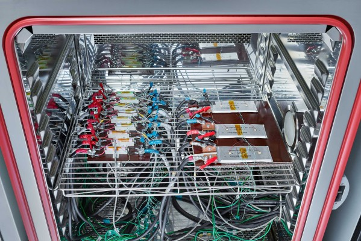
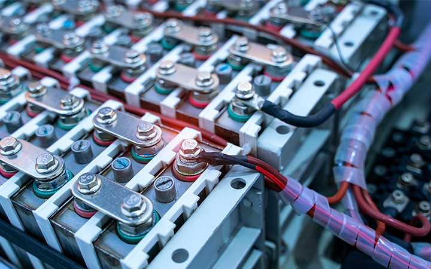

In today's world, lithium-ion batteries are at the heart of modern technology. They power our smartphones, laptops, electric vehicles, and large-scale energy storage systems. As these batteries become more widespread, ensuring their safety and reliability through rigorous testing is more critical than ever. This is especially true for large multi-cell battery packs, which pose unique challenges.
This blog will explore the essential safety considerations and best practices for testing lithium-ion batteries. This will help you understand the importance of proper procedures in safeguarding both the technology and those who use it.
The Growing Importance of Lithium-ion Batteries
Applications of Lithium-Ion Batteries
Lithium-ion batteries are everywhere. From the small devices we carry daily, like smartphones and laptops, to the electric vehicles (EVs) revolutionizing transportation. Their versatility and efficiency have also made them a preferred choice for grid-scale energy storage, where they help balance energy supply and demand in renewable energy systems.
The widespread adoption of lithium-ion batteries across various industries highlights their importance, but it also underscores the need for comprehensive testing to ensure they perform safely and effectively.
The Need for Extensive Testing
As the demand for lithium-ion batteries continues to grow, so does the need for extensive testing. Industries rely on these batteries to power everything from small electronics to large-scale storage systems. This diversity of applications means that testing must cover a wide range of scenarios to ensure safety and performance across the board.
Testing is not just about verifying that a battery works—it's about ensuring that it works safely under all expected conditions. This is particularly crucial for large multi-cell packs used in applications like electric vehicles and grid storage, where a single failure could have significant consequences.

Safety Challenges in Battery Testing
Intrinsic Safety Concerns
Lithium-ion cells come with intrinsic safety features designed to prevent catastrophic failures, such as thermal runaway and short circuits. However, these safety features are not foolproof, and testing can expose potential weaknesses that might not be apparent under normal operating conditions.
During testing, it's important to be aware of the common hazards and failure modes associated with lithium-ion batteries. Thermal runaway, where a battery overheats and potentially catches fire, is one of the most serious risks. Short circuits, overcharging, and mechanical damage can also lead to dangerous situations if not properly managed.
Testing Larger Multi-Cell Packs
When it comes to large multi-cell battery packs, the stakes are even higher. These packs are more complex and have more potential points of failure than single-cell batteries. They require careful attention during testing to ensure that all cells operate safely together.
One of the unique challenges posed by larger battery packs is the possibility of cascading failures. If one cell in a pack fails, it can trigger failures in adjacent cells, leading to a domino effect that could result in a catastrophic event. This makes it essential to implement robust safety measures during testing to prevent such scenarios.
Implementing Safety Measures in Battery Testing
Control Measures for Safe Testing
Safety in battery testing begins with the right control measures. Using fuses and contactors can prevent electrical faults that could lead to dangerous situations. A well-designed testing system should include these components to minimize the risk of accidents.
Good system design is also crucial. This includes following best practices for wiring, grounding, and insulation to reduce the likelihood of electrical faults. Regular maintenance and inspection of testing equipment are also essential to ensure that everything is functioning correctly.
Protective Enclosures and Fire Suppression
Testing environments should be designed with safety in mind. This means using protective enclosures to contain any potential hazards. These enclosures should be built to withstand the extreme conditions that might occur during testing, such as high temperatures and the release of gases.
In addition to protective enclosures, fire suppression systems play a key role in mitigating risk. These systems can quickly extinguish fires before they spread, reducing the potential for damage and injury. It's important to choose a fire suppression system that is suitable for the specific type of battery being tested.
Special Considerations for Single Cells Without BMS
Testing single cells that lack a Battery Management System (BMS) presents its own set of challenges. Without a BMS, these cells are more vulnerable to issues like overcharging and over-discharging, which can lead to dangerous situations.
To address these challenges, it's important to use a protection circuit that relies on analog components for reliability. This circuit can help prevent common problems by monitoring the cell's voltage and temperature, ensuring that it stays within safe limits during testing.
Practical Guidelines for Safe Laboratory Testing

Follow Safety Protocols Step-by-Step
Implementing safety protocols in the laboratory is critical for successful battery testing. Start by preparing the testing environment, ensuring that all equipment is in good working order and that protective measures are in place. Before beginning any tests, perform safety checks to confirm that everything is set up correctly.
During the tests, ongoing monitoring is essential. Keep an eye on the battery's temperature, voltage, and other key parameters to detect any signs of trouble early. If any issues arise, stop the test immediately and address the problem before continuing.
Post-Test Safety Procedures
After testing is complete, it's important to handle the tested batteries carefully. Even if they appear to be in good condition, they may have been subjected to stresses that could affect their performance or safety.
Documenting and reporting test results is also a crucial part of the process. This information can help identify trends and potential issues, contributing to the ongoing improvement of safety protocols.
Understand Real-World Examples
Learning from real-world examples can provide valuable insights into battery testing safety. Case studies of successful implementations of safety measures offer practical lessons that can be applied to your own testing procedures. Similarly, analyzing incidents where things went wrong can help prevent similar occurrences in the future.
Conclusion
Safety in lithium-ion battery testing is not something to take lightly. As these batteries become more integral to our technology, the need for rigorous testing and strict safety protocols only grows. By following best practices and staying informed about the latest developments in battery technology, we can ensure that these powerful energy sources continue to serve us safely and reliably.
In the end, continuous improvement in safety protocols is essential. As battery technology evolves, so too must our approach to testing and safety. I encourage you to adopt and advocate for these rigorous standards in your own work, helping to create a safer future for all.